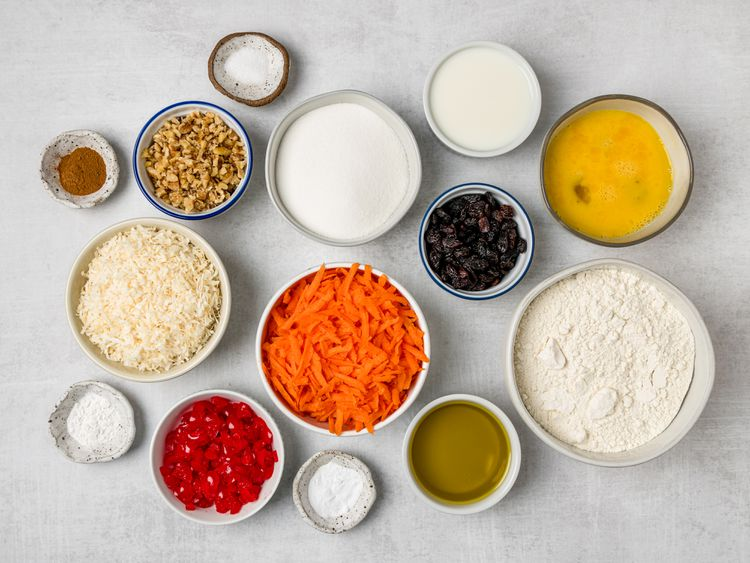
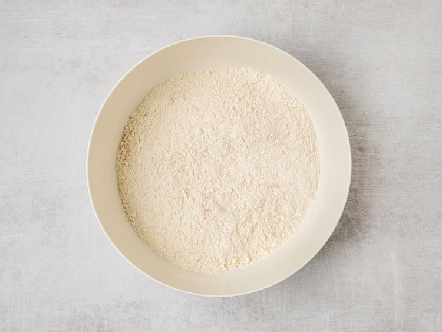
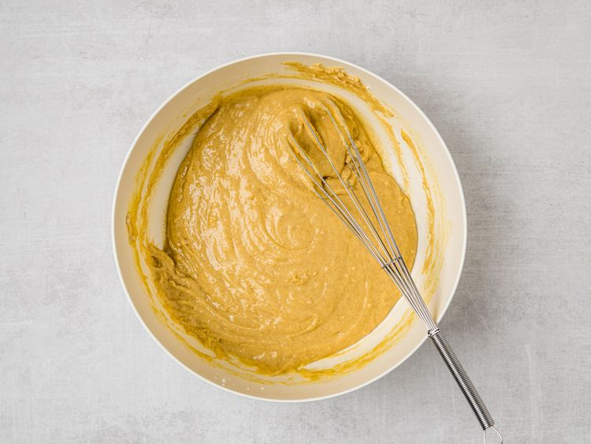
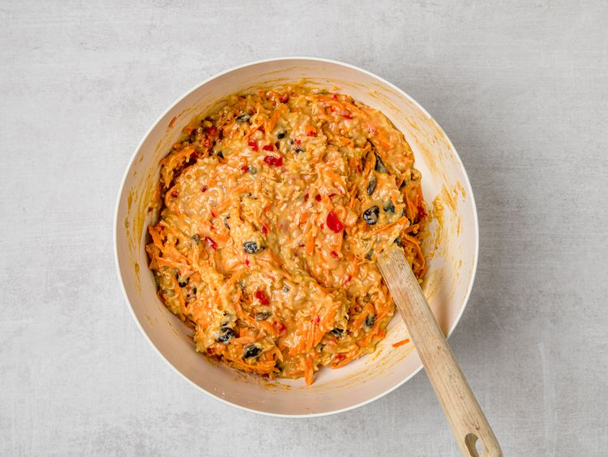
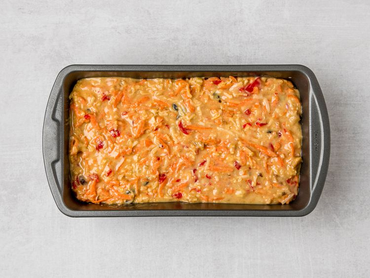
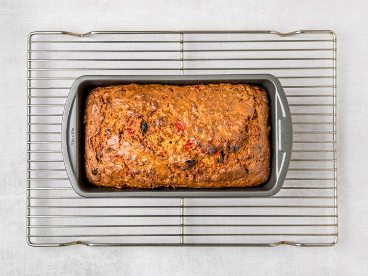

This carrot bread is really a cross between cake and a quick bread. It's bursting with shredded carrots, raisins, maraschino cherries, and nuts. It's delicious warm with butter or cream cheese for brunch. It's really good!
Ingredients
- 2 ½ cups all-purpose flour
- 1 cup white sugar
- 1 teaspoon baking powder
- 1 teaspoon baking soda
- 1 teaspoon ground cinnamon
- ½ teaspoon salt
- 3 large eggs, beaten
- ½ cup vegetable oil
- ½ cup milk
- 2 cups shredded carrots
- 1 (3.5 ounce) package flaked coconut
- ½ cup maraschino cherries, chopped
- ½ cup raisins
- ½ cup chopped walnuts
Directions
-
Gather all ingredients. Preheat the oven to 350 degrees F (175 degrees C). Lightly grease a 9x5-inch loaf pan.

-
Sift flour, sugar, baking powder, baking soda, cinnamon, and salt together in a large bowl.

-
Combine eggs, oil, and milk in a separate bowl; stir into flour mixture until well blended.

-
Stir in carrots, coconut, cherries, raisins, and walnuts.

-
Pour batter into prepared loaf pan.

-
Bake in the preheated oven until a toothpick inserted into center of the loaf comes out clean, about 50 to 60 minutes. Let cool on a wire rack for 10 minutes before removing from the pan to cool completely.

Recipe Reference
https://www.allrecipes.com/recipe/17673/carrot-bread-i/Back to Recipes